Mon premier dashboard
Estimated time to read: 4 minutes
Nous allons maitenant manipuler un dashboard pour ajouter des widgets et avoir quelques visualisations.
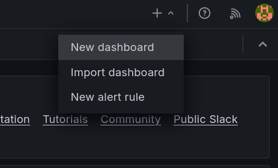
Pour le moment nous allons commencer par un dashboard vide.
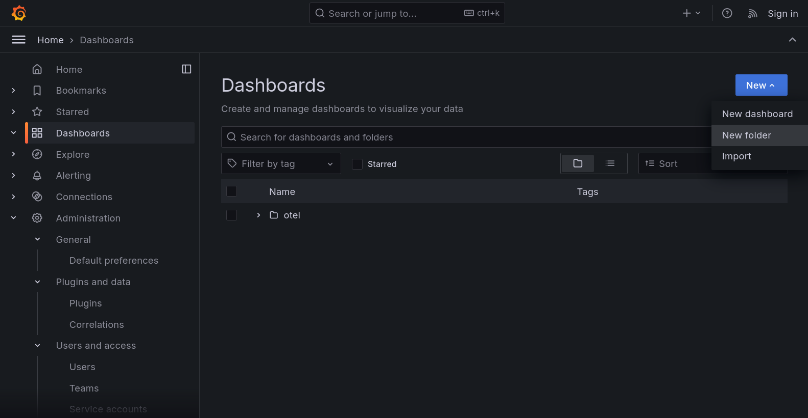
Il est aussi possible de passer par le menu dashboard.
Il est alors possible de créer des repertoires pour organiser vos dashboards.
Ces répertoires sont aussi utilisés pour donner des droits d'accès à des utilisateurs ou des équipes.
Selection de la datasource par default
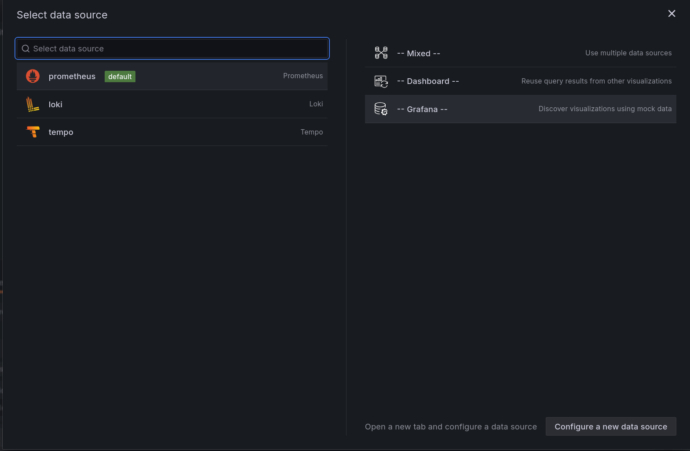
La premiére étape est de choisir une source de donnée pour notre dashboard, elle peux être modifiée plus tard.
Dans un premier temps nous allons choisir une data source particulière, une source de donnée Mocké build in Grafana :
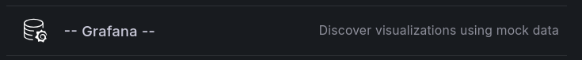
C'est une source de donnée qui génère des données aléatoires pour les métriques, les logs et les traces. Cela permet de tester les fonctionnalités de Grafana sans avoir à configurer une source de données réelle.
Elle nous permettra de voir comment fonctionne Grafana et de créer des visualisations de base.
Visualization : la brique de base du dashboard
On arrive directement sur la création d'un panel de visualisation. Ils sont tous présenté de la même manière.
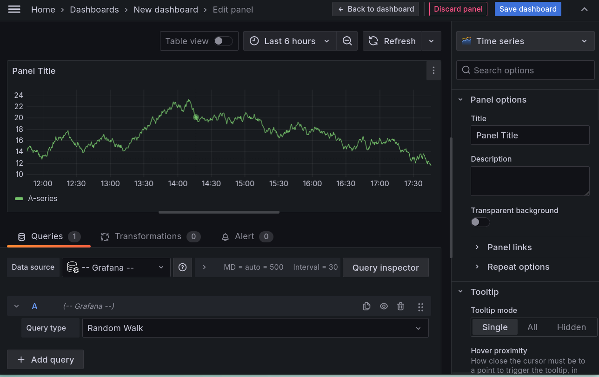
- Au centre la pré visualisation
- En bas les configurations des données
- A droite les options de rendu.
Les différents types de visualisation
On peux changer les types de représnetation en sélectionnant le type de visualisation dans le menu déroulant.
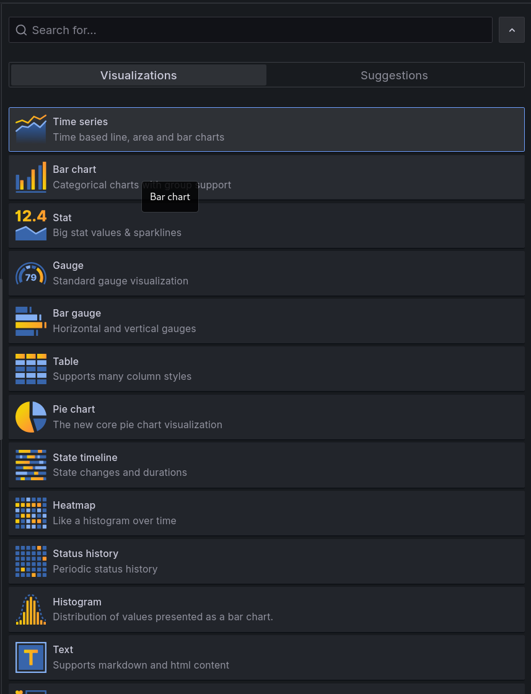
La partie Suggestion propose des visualisations en fonction des données que vous avez.
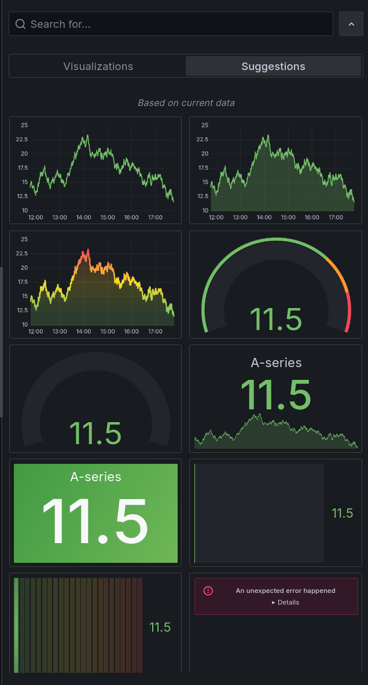
La zone de selection temporelle
Grafana est prévu pour afficher des données temporelle, c'est à dire qu'il vas prendre en compte nativement la date associée à chaqu'une de vos données.
Il est alors possible de filter pour ne voir les données que sur une période données.
Par default le rafraichissement des données est automatique mais vous pouvez définir une fréquence de rafraichissement.
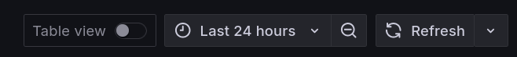
Il est aussi possible de changer le range directement en selectionnant la période souhaitée sur le graphique avec la souris.
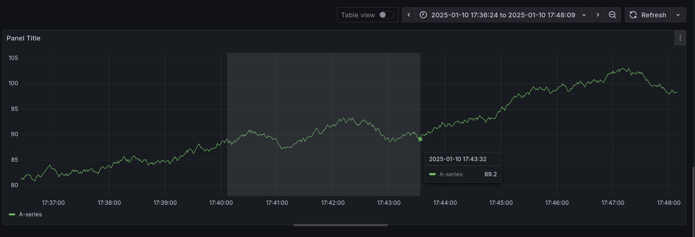
Le menu de selection propose différentes plages de temps pré configurée et il est aussi possible de définir une plage de temps personnalisée.
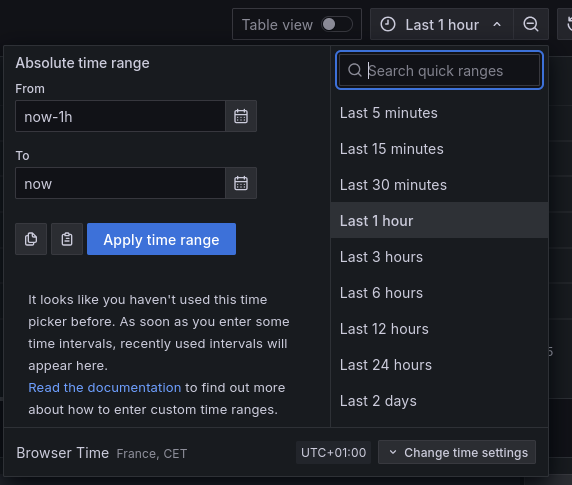
Debug des données du widget
Il y a un menu de configuration sur chaque widget
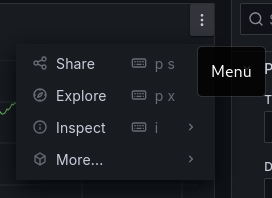
Notament la partie Inspect qui est bien pratique :
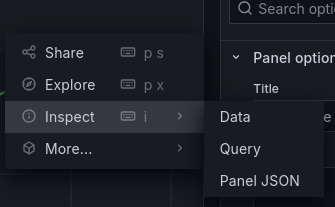
Ces informations sont aussi accéssibles via le Query Inspector:
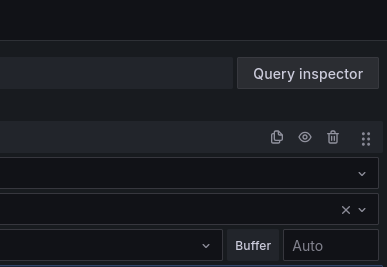
Elle permet de voir les données utilisée pour le widget, ainsi que la requete (variabiliser, on y reviendra plus tard) qui a été faite pour les obtenir.
Les options communes à tout les widgets
Panel Options
- Le titre
- La description
- Les repetitions (on à un chapitre dédié ;-) )
Legend
Il est possible de d'afficher les infos détaillées en passant la sourie sur le graph.
Changez la query pour avoir le paramétrage suivant
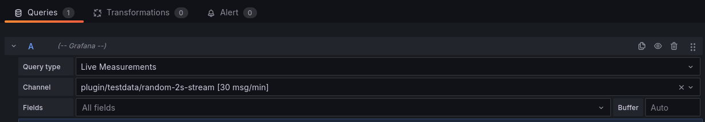
Le Tooltip Mode si il est Single affiche les données de la série sélectionnée, si il est Shared affiche les données de toutes les séries.On à alors plusieurs séries de données qui s'affichent.
Testez les différents modes pour voir la différence.
Legend
Les légendes sont pratiques pour afficher rapidement les extremes / moyennes de vos données.
Essayez de configurer la légende pour obtenir le résultat suivant :
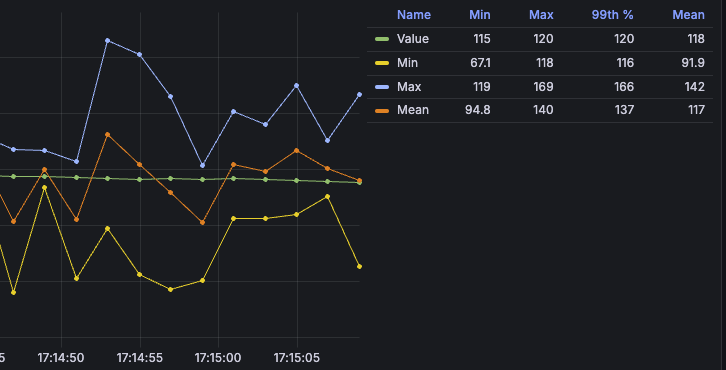
Axis
Permet de regler les axes du graphique, les unités, les échelles, etc.
Passez votre graph en mode logarithmique par exemple.
Graph Style
Ici on retrouve les configurations spécifiques à chaque type de visualisation.
Standard Options
Permettent de configurer les unités de grandeur.
On peux aussi choisir les couleurs d'affichage en fonction de la valeur des données ( 100°C en rouge par exemple et le 0°C en bleu)
Les data Links
Ils pemettent de faire des liens vers d'autres dashboard / visualizations / URL externe et peuvent utiliser des place holder pour passer les valeurs courantes.
Les Thresholds
Sans trop de surprise permettent de définir des seuils et de leur associer une couleur particuliére, ils peuvent être définit de maniére aboslue ou relative (en %) et s'adapter au valeur affichée.
Fields Override
Ils permettent de changer tout ou partie de la configuration du widget en fonction de la valeur des données.
Transformations
Promis on à bientot finit avec les options de configuration.
Les transformations permettent de modifier les données avant de les afficher.
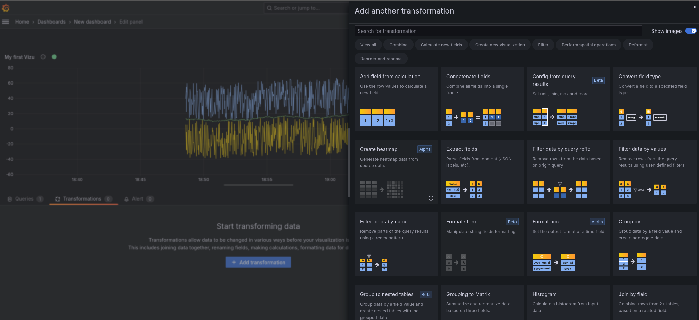
Ces trasnformations sont réalisée par Grafana, elles ne modifient pas les données dans la source de données.
C'est particulièrement utile pour les données qui ne sont pas prévu pour être facilement affichées. On peux alors extraires certaines informations, les convertir, les filtrer, les regrouper, etc.
Sauvegarde du dashboard
On va enfin pouvoir sauvegarder notre dashboard.
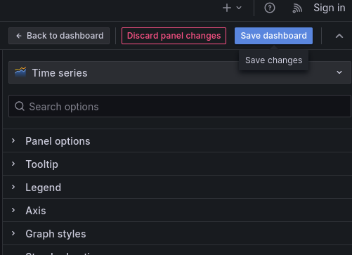
Ca y est nous avons notre premier dashboard avec un seul Widget. Nous allons maintenant pouvoir en ajouter d'autres.
🛫 Prochaine étape : Configurer vos sources de données ➡️